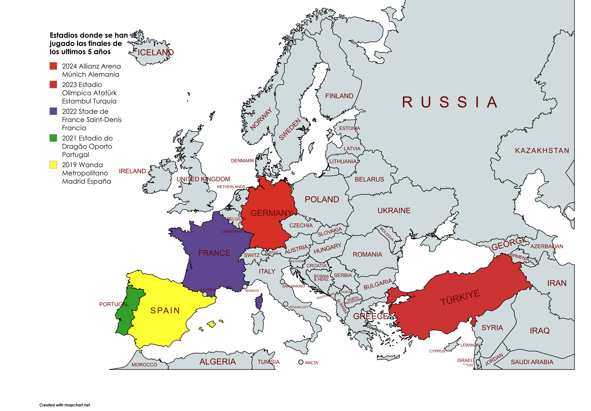

UEFA.com
Videos de la UEFA Champions League
Inicio
Partidos
Clasificación
Videos
Equipos
Iniciar sesión
Canal Oficial de la UEFA
Los mejores goles Champions League 2024
Disfruta de los goles más espectaculares de la temporada
2023-2024
.
2024 Allianz Arena Múnich Alemania
2023 Estadio Olímpico Atatürk Estambul Turquía
2022 Stade de France Saint-Denis Francia
2021 Estadio do Dragão Oporto Portugal
2019 Wanda Metropolitano Madrid España
